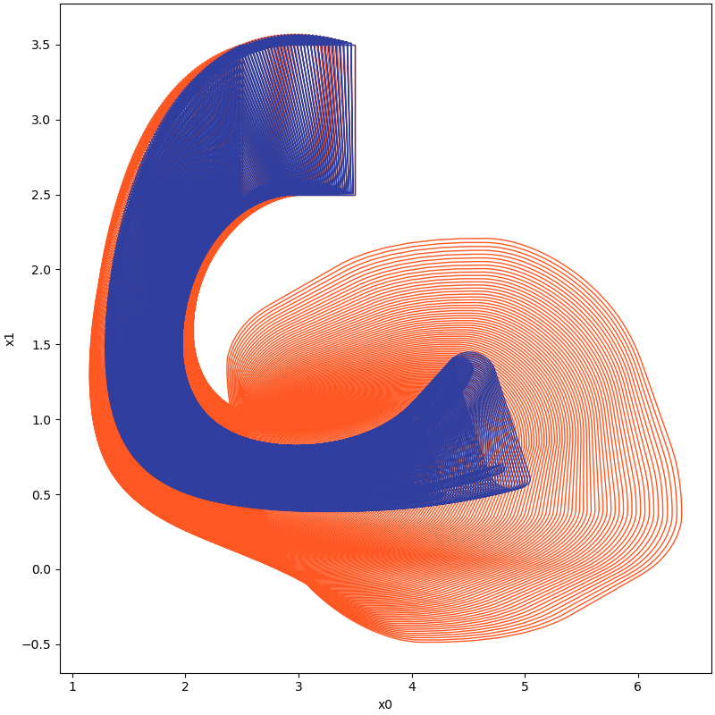
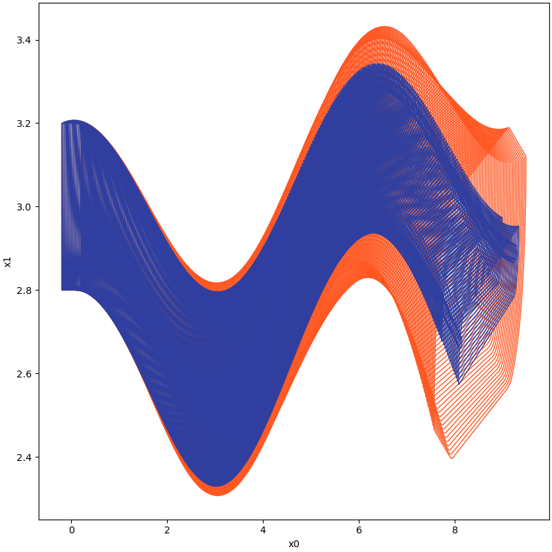
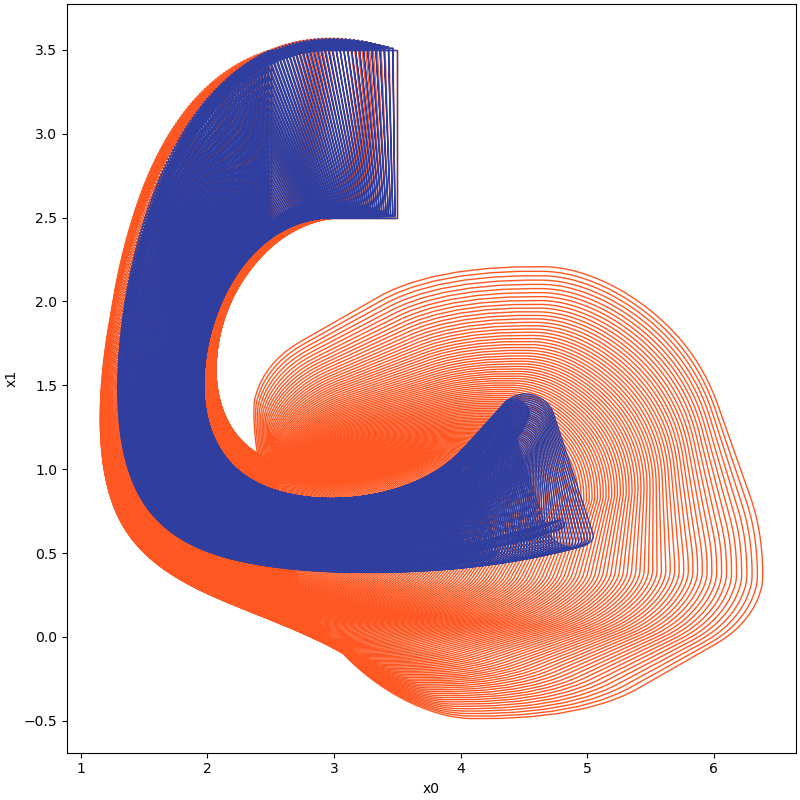
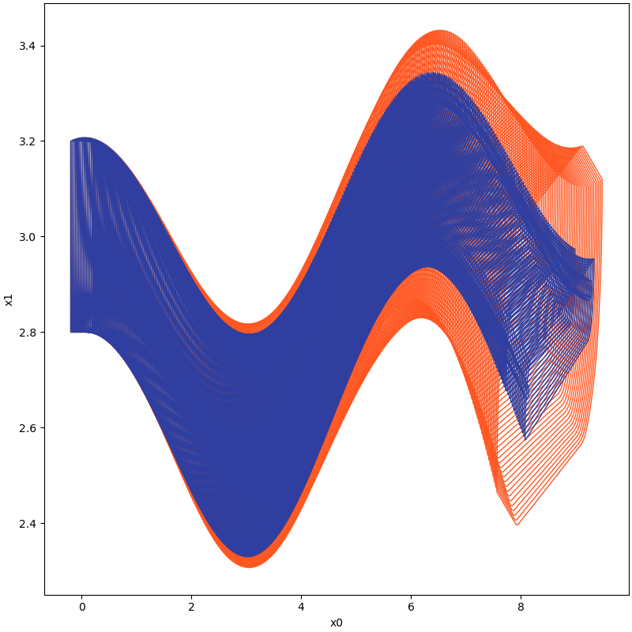

Jianqiang Ding
I am Jianqiang Ding, a passionate researcher currently working as a Research Intern at the State Key Laboratory of Computer Science at ISCAS, China. In 2020, I completed my Master's degree from Shenzhen University and previously earned a Bachelor's degree from Harbin Engineering University. My research primarily focuses on two key areas: Reachability Analysis and Reliable Controller Synthesis by combining the principles of formal methods.
Recent Projects
  
 
The project focuses on the implementation of a tool that employs the "set-boundary based method" for analyzing the reachability of nonlinear systems. Reachability analysis is an essential area of study that involves computing reachable sets and plays a significant role in the safety verification of such systems. However, the propagation and accumulation of over-approximation errors, known as the wrapping effect, can lead to overly pessimistic results, rendering many temporal properties unverifiable in practice. To reduce the wrapping effect, partitioning techniques are often used, but they can induce extensive computation demands on time and memory. In this context, the tool aims to explore an alternative approach that analyzes just a small sub-volume of the initial state set, which encloses its boundary, to compute the full reachable state space based on state-exploratory analysis. The tool's potential to provide significant computational benefits for complex real-world applications attracts considerable attention among researchers and experts. The project's theoretical foundation is based on two papers published in IEEE Transactions on Automatic Control.